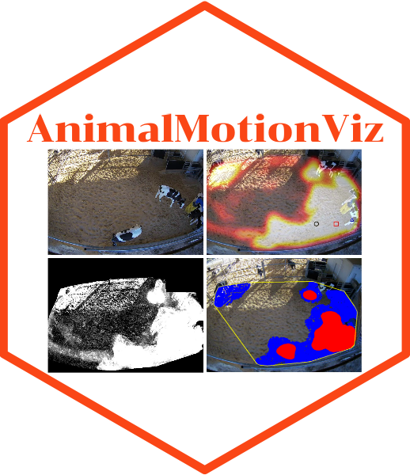

Software & projects

AnimalMotionViz
An interactive software tool for tracking and visualizing animal motion patterns using computer vision.
Peer reviewed journal articles
AnimalMotionViz: an interactive software tool for tracking and visualizing animal motion patterns using computer vision
JDS Communications, 2025
Localization and Classification of Space Objects using EfficientDet detector for Space Situational Awareness
Scientific Reports, 2022
Peer reviewed conference proceedings
Utility of multi-modal integration for predicting postpartum diseases in dairy cattle with imbalanced data
World Congress on Genetics Applied to Livestock Production Digital Archive, July 12–17, Madison, WI, 2026
AnimalMotionViz: an interactive software tool for tracking and visualizing animal motion patterns using computer vision
Proceedings, The 3rd US Conference on Precision Livestock Farming, June 2–5, Lincoln, NE, 2025
Development of a Detection System for Endangered Mammals in Negros Island, Philippines Using YOLOv5n
Proceedings of the 9th International Conference on Computational Science and Technology, 2023
Preprints
Can 3D point cloud data improve automated body condition score prediction in dairy cattle?
arXiv:2601.22522, 2026
Evaluating transfer learning strategies for improving dairy cattle body weight prediction in small farms using depth-image and point-cloud data
arXiv:2601.01044, 2026